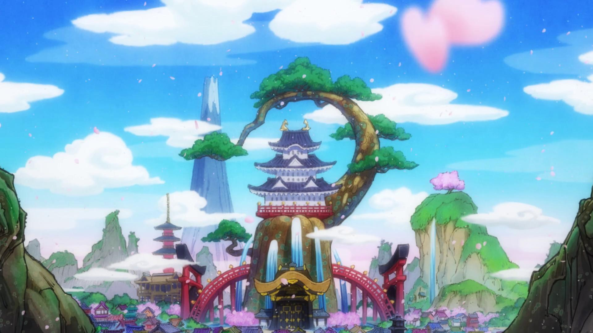

The Grand Line Archives
Home
Straw Hats
Devil Fruits
Story Arcs
Gallery
Welcome to The Grand Line Archives
Explore the vast world of One Piece - from East Blue to the Final Saga
Begin Adventure
The Straw Hat Pirates
Devil Fruit Encyclopedia
Story Arcs Timeline
World Gallery
Marineford

Wano Country
Whole Cake Island